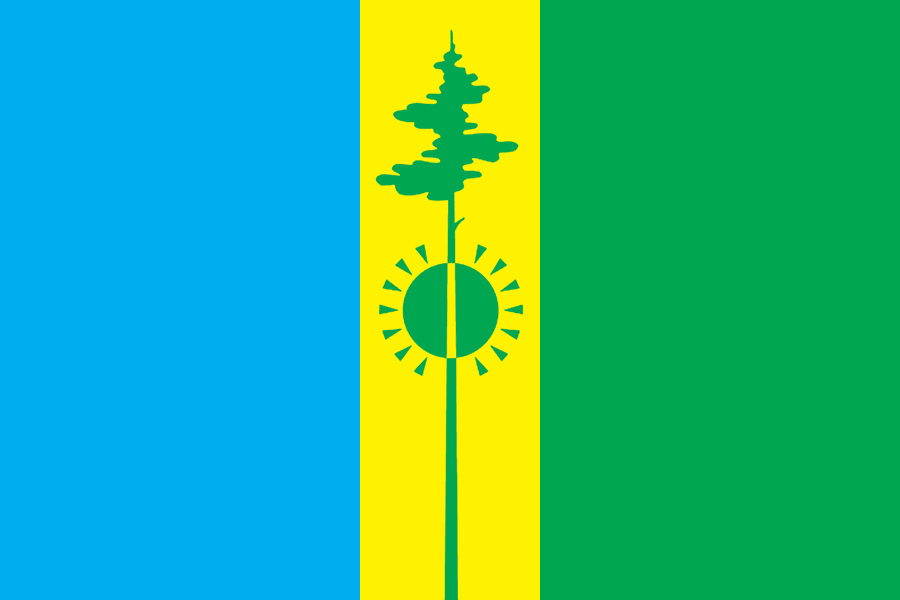

Нижнекамск — один из крупнейших промышленных центров Татарстана, город химиков, нефтепереработчиков и строителей. Основан в 1961 году как молодой город при нефтехимическом комбинате. Сегодня это современный город с развитой инфраструктурой, парками и уникальной атмосферой.

Нажмите на любой период, чтобы узнать подробности:
Как всё начиналось: 25 августа 1961 года — дата официального основания рабочего посёлка Нижнекамский. Первый камень в фундамент будущего города заложили комсомольцы-энтузиасты. Строительство Нижнекамского нефтехимического комбината (НКНК) стало всесоюзной ударной стройкой. Первые дома вырастали прямо в чистом поле, а к концу десятилетия здесь уже жили тысячи молодых специалистов.
Эпоха гигантов: В 70-е годы Нижнекамск превратился в крупнейший промышленный узел. Запущены мощности «Нижнекамскнефтехима», построены шинный завод, ТЭЦ-1 и ТЭЦ-2. Город активно застраивался микрорайонами: появились проспекты Химиков, Строителей, Дружбы. Открылись дворцы культуры, кинотеатр «Джалиль», стадион. В 1975 году численность жителей превысила 100 тысяч.
Испытание временем: 90-е годы стали для города серьёзным вызовом. Промышленность переживала кризис, но градообразующие предприятия выстояли благодаря переориентации на рыночные рельсы. В это время Нижнекамск получил новый импульс: началось развитие малого бизнеса, построены первые торговые центры, а в 1995 году город посетил Минтимер Шаймиев, поддержав программу модернизации нефтехимии.
Технологический рывок: В новом тысячелетии Нижнекамск вошёл в число лидеров российской нефтехимии. Реконструированы заводы, запущено производство полипропилена, полиэтилена. Город расцвёл: появились новые школы, спортивные комплексы, набережная Камы. В 2005 году торжественно отметили 40-летие города. Активно велось дорожное строительство, открылся парк «Солнечная поляна».
Город возможностей: Сегодня Нижнекамск — это более 240 тысяч жителей, мощный промышленный кластер (ПАО «Нижнекамскнефтехим», ТАНЕКО, шинный завод и др.). Город динамично развивается: строятся жилые комплексы, открыты IT-лицей, обновлённый городской пляж, лыжно-биатлонный комплекс. В 2021 году Нижнекамск отпраздновал 60-летний юбилей. В планах — создание современной агломерации и дальнейшее улучшение экологии.